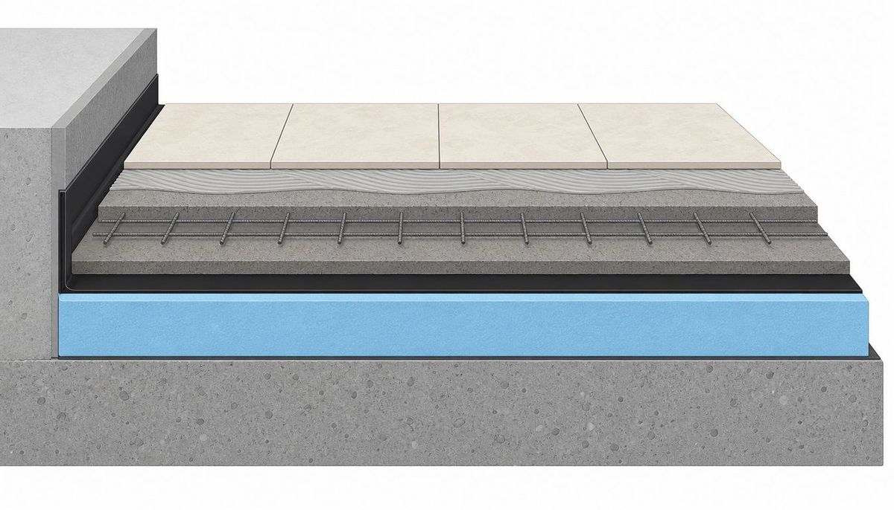

пирог пола на балконе — 90–130 мм: плита, гидроизоляция, утеплитель 50–100 мм, стяжка 40–50 мм или лаги, финиш. Пеноплэкс 50 мм стоит 550–800 руб./м², стяжка — 700–1 100 руб./м², керамогранит — 900–2 500 руб./м². Пол на лоджии 6 м² своими руками обходится в 25 000–60 000 руб. Главное ограничение — вес: пирог тяжелее 250 кг/м² на балконной плите опасен.
Пирог пола по слоям

| Слой | Толщина | Материал | Цена за м² |
|---|---|---|---|
| Грунт | — | бетон-контакт | 60–120 руб. |
| Гидроизоляция | 1,5–2 мм | обмазочная мастика | 250–500 руб. |
| Утеплитель | 50–100 мм | экструдированный пенополистирол | 550–1 400 руб. |
| Разделительная плёнка | 0,2 мм | ПЭ | 30–60 руб. |
| Стяжка | 40–50 мм | ЦПС или полусухая | 700–1 100 руб. |
| Финиш | 8–10 мм | керамогранит | 900–2 500 руб. |
Гидроизоляция обязательна, даже если балкон остеклён: конденсат и занос снега дают воду, которая уходит в плиту и к соседям снизу. Обмазочная мастика наносится в 2 слоя с заходом на стены 100–150 мм.
Утепление: чем и сколько
| Материал | Толщина | Цена за м² | Особенность |
|---|---|---|---|
| ЭППС (Пеноплэкс) | 50 мм | 550–800 руб. | не боится влаги, прочный |
| ЭППС | 100 мм | 1 100–1 400 руб. | для холодного балкона с тёплым полом |
| Минвата 120 кг/м³ | 50–100 мм | 350–700 руб. | нужна пароизоляция |
| Пенопласт ПСБ-35 | 50 мм | 300–500 руб. | дешевле, но хрупкий |
ЭППС выигрывает по влагостойкости: минвата, намокнув, теряет 30–50 % теплоизоляции и не сохнет под стяжкой. Для пола берут плиты плотностью от 30 кг/м³ — мягкие деформируются под стяжкой.
Три варианта конструкции
| Вариант | Высота пирога | Вес | Цена за м² |
|---|---|---|---|
| Мокрая стяжка | 90–130 мм | 180–250 кг | 1 300–2 200 руб. |
| Полусухая стяжка | 80–110 мм | 150–200 кг | 1 200–1 900 руб. |
| Сухая стяжка (ГВЛ по засыпке) | 70–90 мм | 60–90 кг | 1 100–1 800 руб. |
| Лаги по утеплителю | 100–150 мм | 50–80 кг | 1 400–2 400 руб. |
На старом балконе хрущёвки с плитой на 400–600 кг/м² мокрую стяжку делают только после расчёта нагрузки. Сухая стяжка и лаги легче в 2–3 раза и не требуют времени на сушку.
Стяжка: состав и толщина
| Тип | Толщина | Срок готовности | Цена |
|---|---|---|---|
| ЦПС М150 | 40–50 мм | 21–28 дней | 700–1 100 руб./м² |
| Полусухая с фиброй | 40–50 мм | 3–7 дней | 800–1 200 руб./м² |
| Наливной пол | 5–30 мм | 1–3 дня | 500–900 руб./м² |
| Сухая засыпка + ГВЛ | 50–70 мм | сразу | 900–1 500 руб./м² |
Армирование сеткой 50×50×3 мм обязательно при слое меньше 50 мм и при укладке на утеплитель. Без сетки стяжка трескается по швам плит утеплителя.
Финишное покрытие
| Покрытие | Цена за м² | Плюсы | Минусы |
|---|---|---|---|
| Керамогранит | 900–2 500 руб. | морозостойкий, не боится воды | холодный, тяжёлый |
| Керамическая плитка | 600–1 800 руб. | дешевле, лёгкая | не для неотапливаемого балкона |
| Террасная доска ДПК | 1 800–4 000 руб. | тёплая, монтаж на лаги | дороже, нужен каркас |
| Линолеум на фанере | 400–1 200 руб. | дёшево, быстро | не для влажных зон |
Для неотапливаемого балкона берут керамогранит с водопоглощением до 0,5 % и морозостойкостью F100 или ДПК. Обычная плитка после 2–3 зим отходит от клея.
Смета лоджии 6 м²
| Позиция | Объём | Стоимость |
|---|---|---|
| Гидроизоляция | 6 м² | 1 500–3 000 руб. |
| ЭППС 50 мм | 6 м² | 3 300–4 800 руб. |
| Стяжка 50 мм с сеткой | 6 м² | 4 200–6 600 руб. |
| Керамогранит | 6,5 м² | 6 000–16 000 руб. |
| Клей C2TE и затирка | — | 2 500–5 000 руб. |
| Работа (если не своими руками) | 6 м² | 8 000–24 000 руб. |
Итого 25 500–59 400 руб. Самостоятельная укладка экономит 8 000–24 000 руб., но требует 3–4 недели на сушку стяжки.
Расчёт нагрузки на плиту
Балконная плита в панельном доме рассчитана на 200–400 кг/м² полезной нагрузки (СП 54.13330.2022), в хрущёвках — часто на 200 кг/м². Считают вес всех слоёв плюс мебель и людей.
| Элемент | Вес на м² |
|---|---|
| Стяжка ЦПС 50 мм | 100–110 кг |
| ЭППС 50 мм | 2–3 кг |
| Керамогранит с клеем | 22–28 кг |
| Гидроизоляция | 3–4 кг |
| Мебель и люди (запас) | 80–120 кг |
Итого мокрая стяжка с плиткой — 210–265 кг/м², то есть на пределе. Сухая стяжка даёт 90–120 кг/м², лаги с ДПК — 70–100 кг/м². Если балкон старый и плита с трещинами, выбирают лёгкий вариант.
Порог, дверь и уровень пола
Пирог 100–130 мм поднимает уровень пола на балконе выше квартирного. Балконная дверь при этом не откроется, а порог станет ступенькой. Решения: снять дверное полотно и подрезать снизу на 20–40 мм (300–800 руб. у столяра), демонтировать порог и нарастить откос, либо выбрать сухую стяжку 70 мм и выйти на разницу 20–30 мм с алюминиевым профилем.
| Ситуация | Решение | Цена |
|---|---|---|
| Разница до 30 мм | порожек-профиль | 800–2 500 руб. |
| Разница 30–60 мм | подрезка двери | 1 500–4 000 руб. |
| Разница больше 60 мм | ступень или замена дверного блока | 8 000–35 000 руб. |
Уровень пола планируют до заливки стяжки: переделать пирог после — значит вскрыть финиш и вывезти несколько сотен килограммов бетона.
Порядок работ
- Очистить плиту, простучать, заделать трещины ремонтным составом.
- Прогрунтовать, нанести гидроизоляцию в 2 слоя, высушить 24 часа.
- Уложить ЭППС в 1–2 слоя с перекрытием швов, проклеить стыки.
- По периметру — демпферная лента 10 мм.
- Уложить сетку и залить стяжку, выровнять по маякам.
- Выдержать 21–28 дней (полусухую — 3–7 дней).
- Прогрунтовать, уложить керамогранит на клей C2TE, затереть швы через 24 часа.
Ошибки и их цена
| Ошибка | Последствие | Исправление |
|---|---|---|
| Нет гидроизоляции | протечка к соседям | вскрытие 20 000–40 000 руб. |
| Минвата под стяжкой | намокание, потеря тепла | замена пирога |
| Стяжка без сетки | трещины по швам плит | переливка |
| Пирог тяжелее 250 кг/м² | нагрузка на плиту | переделка на сухую стяжку |
Чек-лист перед началом
- Плита проверена, трещины заделаны.
- Гидроизоляция в 2 слоя с заходом на стены.
- Утеплитель — ЭППС от 30 кг/м³.
- Стяжка армирована сеткой, есть демпферная лента.
- Вес пирога посчитан и не превышает 250 кг/м².
Частые вопросы
Можно ли залить стяжку на балконе без утепления?
Можно, но пол будет холодным, а конденсат под стяжкой приведёт к плесени. Утепление 50 мм стоит 3 300–4 800 руб. на 6 м².
Сколько весит пирог пола с мокрой стяжкой?
180–250 кг/м² при слое 50 мм. Для старой плиты это предел: нужен расчёт или сухая стяжка.
Какой утеплитель лучше для пола на балконе?
Экструдированный пенополистирол 50–100 мм: не впитывает влагу и держит нагрузку от стяжки.
Сколько сохнет стяжка перед плиткой?
ЦПС — 21–28 дней, полусухая — 3–7 дней. Влажность проверяют влагомером: не выше 5 %.
Можно ли положить плитку прямо на утеплитель?
Нет. Нужна стяжка или ГВЛ в 2 слоя: клей на ЭППС не держится, плитка отходит.
Нужен ли тёплый пол на балконе?
Если балкон отапливается и используется зимой — да, электрический кабель 100–150 Вт/м². Пирог при этом делают на ЭППС 100 мм.